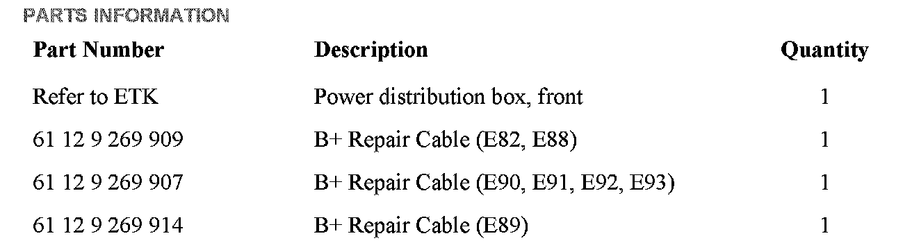
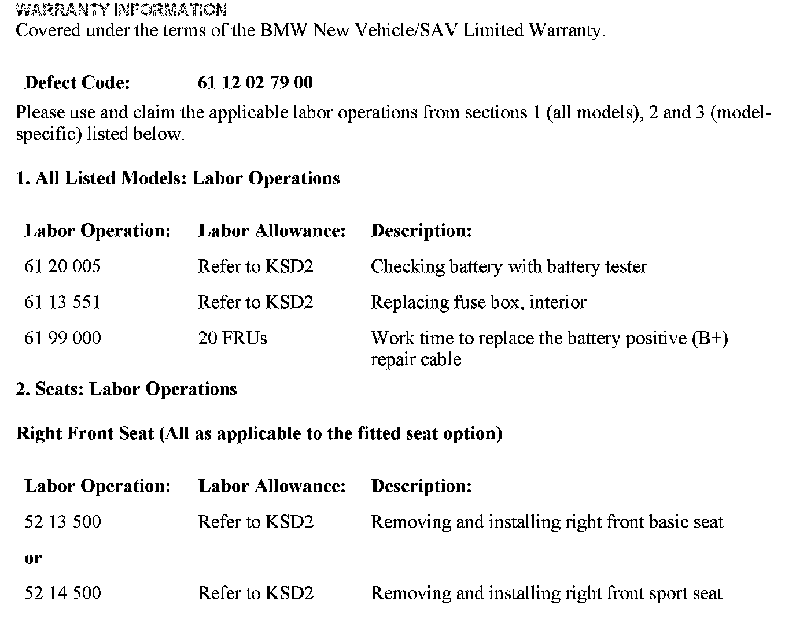
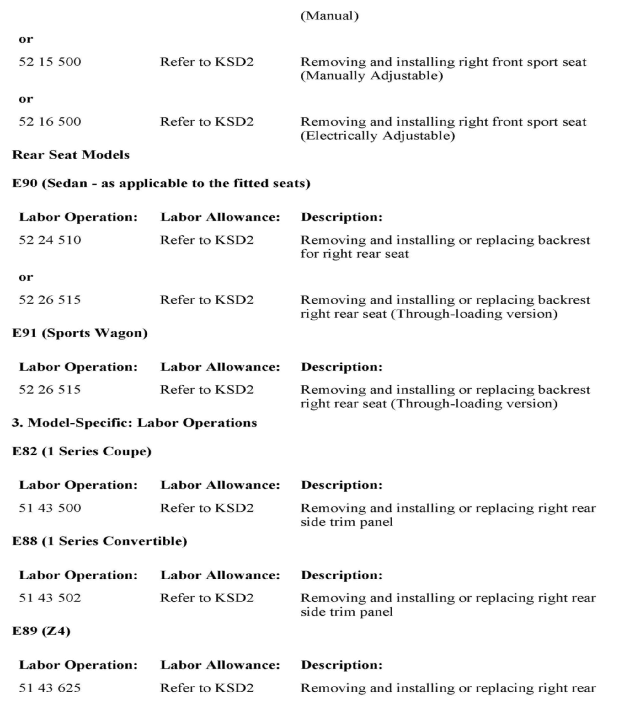
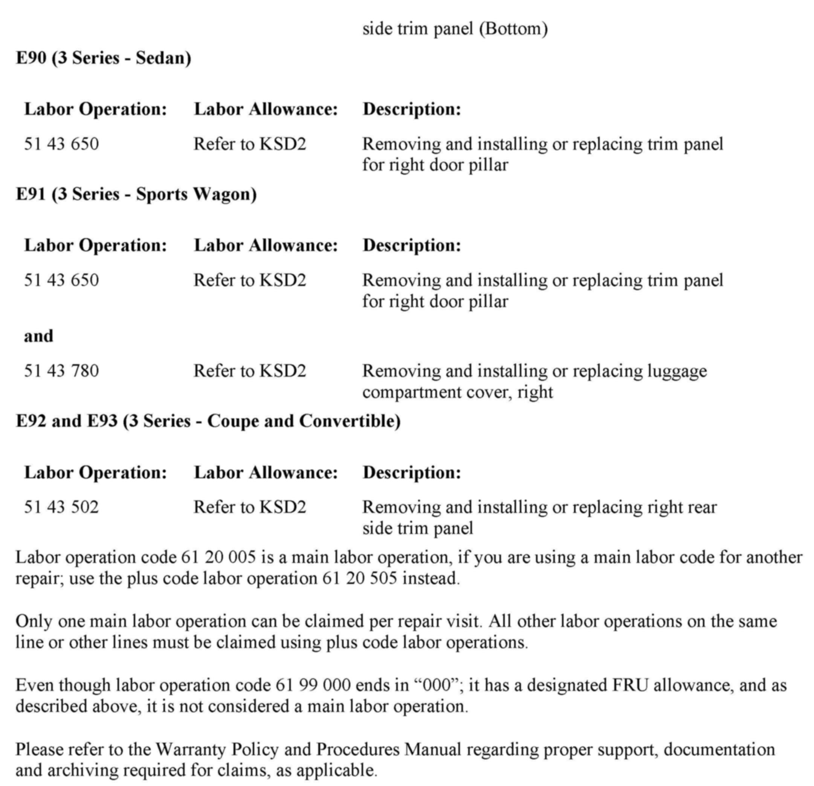
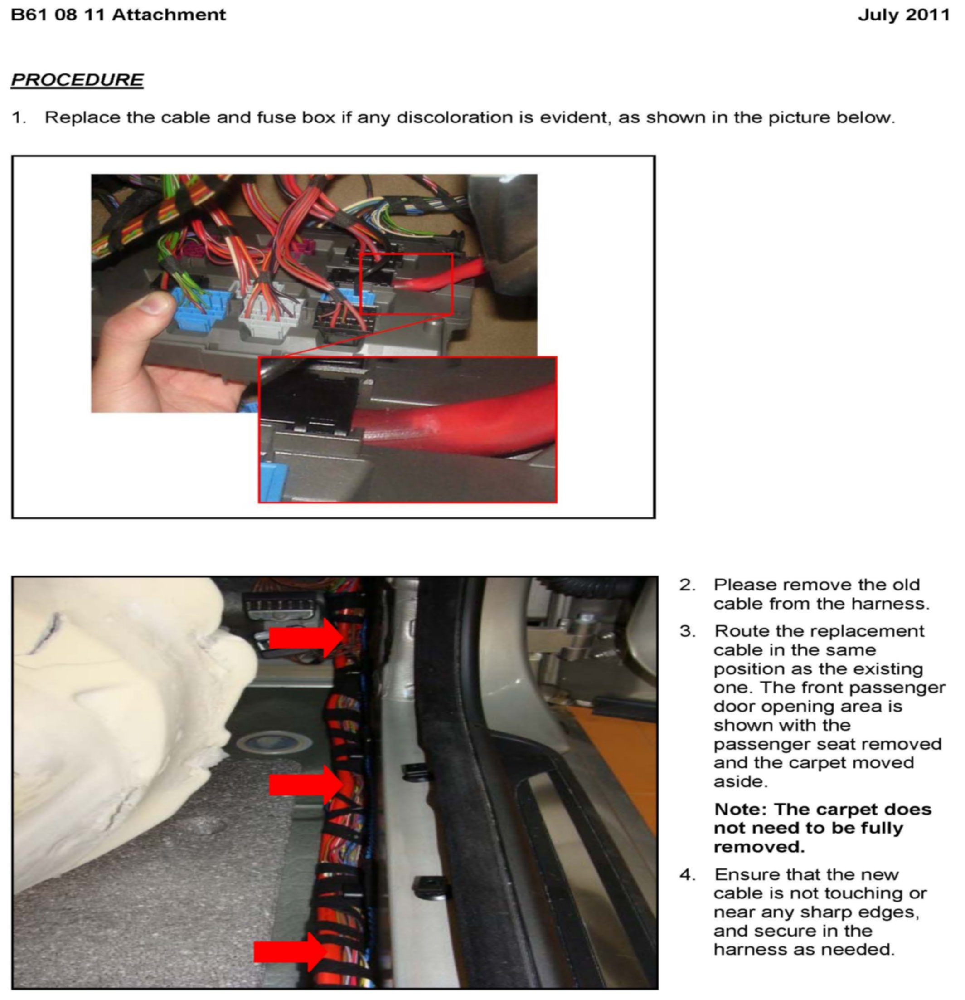
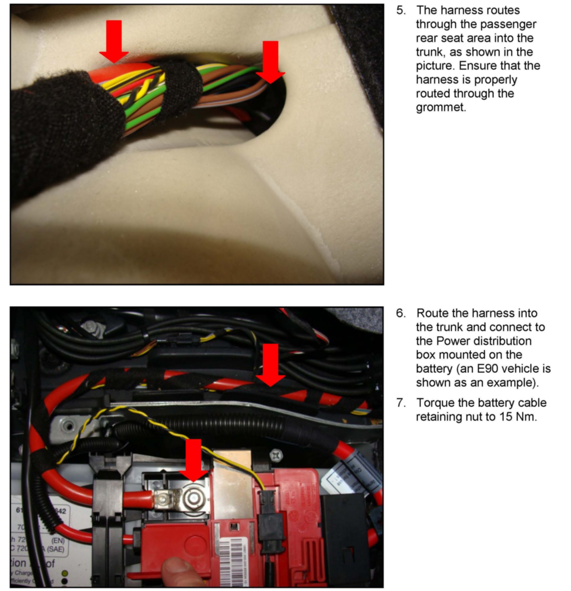

Electrical - Complete Electrical System Power Failure
SI B61 08 11General Electrical Systems
July 2011
Technical Service
SUBJECT
Complete Power Failure of the Vehicle's Electrical System
MODEL
E82, E88 (1 Series)
E89 (Z4)
E90, E91, E92, E93 (3 Series)
Vehicles produced from 2/28/2007 to 5/30/2011
SITUATION
The vehicle electrical system fails completely and one or more of the following faults may occur:
^ The vehicle fails to start.
^ The central locking system fails to operate with the remote key.
^ The key cannot be inserted into the key slot.
^ Communication to the vehicle is not possible using ISTA (Integrated Technical Service Application).
CAUSE
Over time, the positive battery cable connection at the front power distribution box loses connection.
PROCEDURE
The situation described in this Service Information can also be attributed to a discharged battery. Before proceeding with this procedure, check that the battery is in operating condition by using the BMW battery tester.
1. Remove the front fuse box as per ISTA Repair Instructions REP 61 13 050, Removing and installing or replacing fuse box in passenger compartment (built afier 3/2007).
2. Check for discoloration of the positive battery cable insulation where the cable connects to the fuse box. Refer to the attachment to this Service Information bulletin, which shows the affected area.
3. If discoloration is noted in the affected area, replace both the fuse box and the cable. The cable routes from the battery fuse box in the luggage compartment to the front fuse box along the main wiring harness, under the carpet on the right side of the vehicle interior. There are currently no repair instructions to replace this cable. Refer to ISTA Repair Instructions REP 51 47 315 and 51 47 440 for removing all the carpets in order to gain access to the harness. Route the new cable in the exact same way as the original cable. Refer to attachment.
REP 51 47 315 and 51 47 440 are for reference only, the full scope of these repair procedures do not apply (removing all seats and the center console as applicable) to the repair procedure outlined in this Service Information bulletin.
Note:
The replacement cables listed in this Service Information have been improved to prevent this fault from occurring in the future.
Please take particular care in removing and installing the replacement B+ battery cable that is contained in the main harness to avoid damaging other wiring.
4. If no discoloration is found on the cable insulation, proceed with standard troubleshooting to identify the voltage drop in the battery cable circuit.

PARTS INFORMATION



WARRANTY INFORMATION
ATTACHMENTS


PROCEDURE